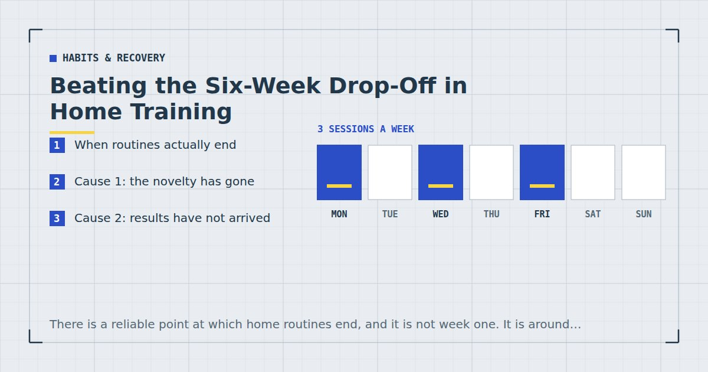

Habits & Recovery
Beating the Six-Week Drop-Off in Home Training
There is a reliable point at which home routines end, and it is not week one. It is around week six, and the causes are predictable enough to plan around.

Almost nobody quits in week one. Week one is easy — the decision is fresh, the novelty is real, and the sessions feel like progress simply because they are new.
The failure point sits later, and in my experience and that of most people I have compared notes with, it clusters around weeks five to eight. Understanding why makes it substantially easier to get through.
When routines actually end
Worth being clear that the "six weeks" here is a pattern rather than a precise finding. What I can say with more confidence is that four things all come to a head at roughly the same point, and they compound.
The novelty has worn off. Visible results have not yet arrived. The initial plan has met a genuinely busy fortnight. And a missed session has turned into two.
Each alone is survivable. Arriving together, they are what ends the routine — and they arrive together because they are all downstream of the same clock.
Cause 1: the novelty has gone
In week one, everything is interesting. By week six you are doing the same six exercises for the fourth time this fortnight, and it is simply less engaging.
The instinct is to change the programme. This is exactly wrong, and it is the most common self-inflicted failure in home training. Progress needs something to compare against, and changing the exercises removes your only feedback — you can no longer tell whether you are improving, which removes the one thing that would keep you going.
The fix is to change the difficulty, not the exercises. Move down a step on the push-up ladder, add a slow descent, take the last set closer to failure. The session stays comparable and stops being easy. The ladders are in bodyweight exercise progressions.
There is a genuine consolation here too: soreness having stopped is not a sign the training stopped working. It is a sign your body adapted, which is the point — see DOMS: why you're sore and what actually helps.
Cause 2: results have not arrived
Six weeks is enough for real strength change and not enough for the visible change most people were quietly expecting.
This mismatch does more damage than any physical factor. Someone six weeks in has genuinely improved — their push-up numbers are up, stairs feel different, they sleep better — and they are disappointed, because the mirror looks the same.
The fix is measurement. Progress at this stage is invisible from the inside and obvious in a notebook. If you recorded your reps in week one, week six is when that record pays for itself. If you did not, start now — see tracking progress without a gym or scale.
Realistic timelines are in how long until you see results from home workouts, and reading them at the start rather than at week six would prevent a good deal of this.
Cause 3: the plan was built for a good week
Plans are made during periods of high motivation, which is precisely when your estimate of your future availability is least accurate.
A five-day plan made on a Sunday evening in January meets a genuinely busy fortnight in February and produces three completed sessions out of ten. The physical cost of that is small. The psychological cost is large, because repeatedly missing your target builds the sense that the plan is not working — and that perception, rather than the missed volume, is what ends routines.
The fix is to plan for the bad week. Take the number of sessions you believe you can manage and subtract one. Hitting three out of three builds the sense that this works; missing two of five does the opposite, even though the training is similar. The full argument is in the weekly home workout schedule.
Cause 4: one miss became three
The mechanical failure, and the most preventable.
Research on habit formation found that missing a single opportunity did not materially affect the process.1 One session is genuinely noise. The problem is the second: after two consecutive misses the cue weakens, the routine loses its place in the week, and the third is much easier to miss than the second was.
By week six, most people have had at least one legitimately disrupted week. Whether that becomes a gap or a blip is decided by what happens at the second missed session.
The fix is a rule decided in advance: never miss twice in a row. If a session goes, protect the next one at almost any cost — including by reducing it to ten minutes of three exercises. That reduced session is not a compromise; it is the thing that keeps the routine alive.
Week six is not when training gets harder. It is when four separate things that started in week one all arrive at once.
What prevents it
Five things, all decided at the start rather than at week six.
1. Under-plan. Three sessions, not five. Add a fourth in month three if three has been reliable.
2. Write the numbers down from session one. Ten seconds per session, and it is what makes week six's invisible progress visible.
3. Define the minimum session now. Ten minutes, three exercises, written down. The decision is made better today than on the bad evening.
4. Progress the difficulty, not the programme. Same exercises for eight weeks, made harder. This keeps the sessions comparable and keeps them from becoming easy.
5. Attach sessions to cues rather than times. A time competes with everything else in the slot; an event that already happens reliably does not — see habit stacking for exercise.
Underlying all five: automaticity takes a median of around 66 days to develop, with substantial variation.1 Week six sits just before that. The routine is genuinely still effortful at that point because it has not yet become automatic — you are close, not failing.
If you are already past it
If you are reading this having stopped, three things worth knowing.
Detraining is slower than people fear. Strength is retained for weeks, and returning is considerably faster than starting. Whatever you built is not gone.
Restart below where you stopped. The instinct is to resume at your previous level, which produces a punishing session, disproportionate soreness and a second abandonment. Drop a stage — the approach is in how to restart after missing two weeks.
Change the plan, not your resolve. If the same routine has now ended twice at the same point, the routine is the variable. Reduce it to two sessions a week, which still meets the adult recommendation for muscle-strengthening activity,2 and rebuild from something you can hold.
Where to go next
For the complete behavioural approach, see how to actually stick to a home workout habit. For expectations that prevent the week-six disappointment, see how long until you see results.
Frequently asked questions
Why do people quit working out after six weeks?
Four things come to a head at roughly the same point: the novelty has worn off, visible results have not yet arrived, the initial plan has met a genuinely busy fortnight, and a missed session has become two. Each alone is survivable; together they end routines.
Should I change my workout programme if I am bored?
Change the difficulty, not the exercises. Progress needs something to compare against, and swapping exercises removes your only feedback on whether you are improving — which removes the thing that would keep you going.
How long before a workout habit becomes automatic?
Research on habit formation found a median of around 66 days to reach a plateau of automaticity, with substantial individual variation. Week six sits just before that, which is part of why it still feels effortful at that point.
What should I do if I miss a workout?
Protect the next one at almost any cost, including by reducing it to ten minutes. A single missed session does not materially affect habit formation; two consecutive misses are where routines start unravelling.
How do I restart after quitting?
Restart below where you stopped rather than at your previous level. Detraining is slower than people fear and returning is faster than starting, but resuming at your old difficulty produces a punishing session and often a second abandonment.
Is it normal for progress to feel invisible at six weeks?
Yes. Six weeks is enough for real strength change and not enough for the visible change most people quietly expect. This is why recording your repetitions from session one matters — the progress is obvious in a notebook and invisible in a mirror.
Sources and further reading
- Lally P, van Jaarsveld CHM, Potts HWW, Wardle J. “How are habits formed: Modelling habit formation in the real world.” European Journal of Social Psychology, 2010;40(6):998–1009. doi:10.1002/ejsp.674.
- World Health Organization. WHO Guidelines on Physical Activity and Sedentary Behaviour. 2020.
- Schoenfeld BJ, Ogborn D, Krieger JW. “Dose-response relationship between weekly resistance training volume and increases in muscle mass: A systematic review and meta-analysis.” Journal of Sports Sciences, 2017;35(11):1073–1082. PubMed.
- NHS. Strength and Flex exercise plan.
Comments
Comments are not enabled yet. Add a hosted comment embed (Disqus, Commento, Giscus) inside this container when you are ready.